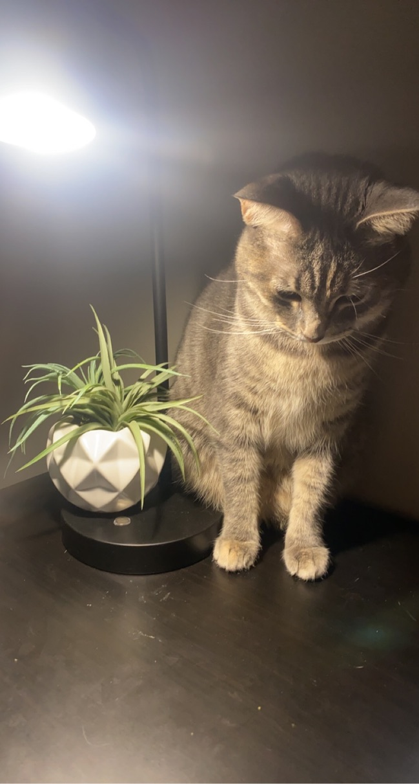

Our family
Beesly
The day my family decided to take a chance on adopting me! I was a foster kitten at a friendly and loving shelter home. I met many friends and life long memories. I was privledged and blessed to have found such a loving family that appreciates me and takes care of me. Now that I have been blessed I want to help others like me. Please have a look at some of my friends to help find a forever home or donate so that I can help many others! Thank you for all you can do and visiting us!